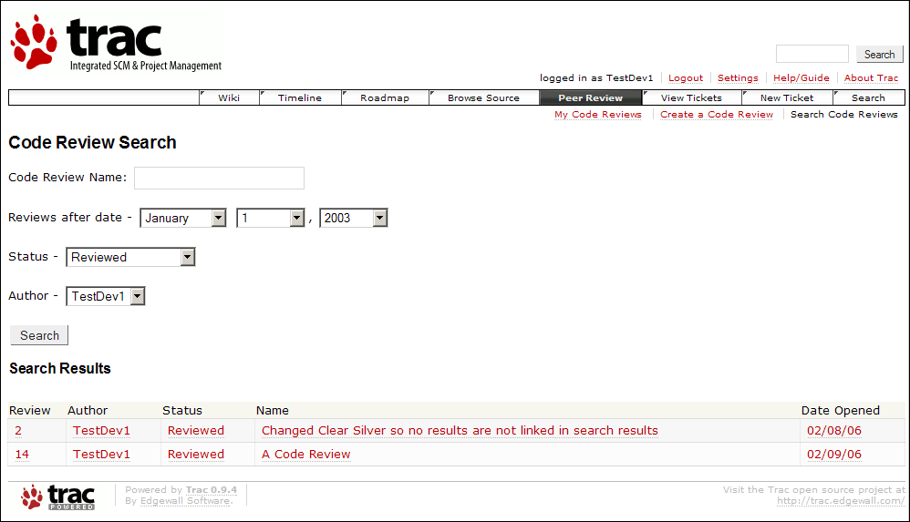

The code review search page facilitates finding code reviews in the repository.
This page helps search for code reviews, given relevant information to find the correct code reviews. First, search constraints are selected, and then a search is performed by clicking on the search button. When search constraints are selected and a search is performed, code reviews that still satisfy the constraints are listed. If no constraints are given, all reviews, both active and inactive (closed), are listed. Combinations of fields narrow the search results. For example, searching for reviews after one month ago and by a certain author will likely return less results than searching by one of the constraints alone. It is possible to constrain the search such that no results are returned. Such a condition is indicated after searching.
To find a particular code review name or code review names that contain certain characters, enter it in the "Code Review Name" field. Further, to find reviews after a certain date, enter the date in the second set of input boxes. Likewise, to constrain the returned results of the search to a certain status, change the "Status" field. Finally, to find all code reviews matching a certain author, fill in the final field. After specifying the constraints for the search, click on the "Search" button.
After pressing the "Search" button, search results will be given, which includes all code reviews that match the constraints specified before searching:

As seen above, the results include information on the review ID, author name, current status, and review name. For each review listed, links are given to jump directly to the view code review page for the review. Alternately, the constraints can be increased or relaxed by choosing different values for the fields and searching again.
Copyright 2005-2006 Team5